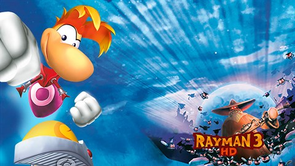

HISTORIA:
Un día, un Lum Rojo llamado André se transformó en un Dark Lum, una pequeña bola peluda y rabiosa. Su intención era conquistar el mundo y tras transformar a otros Lums Rojos en Dark Lums, se unieron para formar un ser resultado de la unión de los Dark Lums y pelo de animal, formando así los Hoodlums, llenando el mundo de terror y caos.
Con el tiempo, los Hoodlums se fueron apoderando del bosque, y poco a poco del resto del mundo. Después de llegar a la entrada del Concilio de las Hadas, Rayman y Murphy descubren a Globox escondido en un barril. Después de que Rayman saque a su amigo de allí y este le devuelva sus manos (las cuales le quita accidentalmente en la introducción del juego), André y algunos de sus soldados se unen a ellos y empiezan a darles caza, lo que le da mucho miedo a Globox y este huye. Rayman y Murphy se dan cuentan de los malvados planes de André: corromper el Corazón del Mundo para que pueda crear esa misma energía en un ejército de Hoodlums.
ANALISIS:
Normalmente conocemos a Rayman como un saltarín con un modesto abanico de trucos, pero en Hoodlum expande sus movimientos con un par de botes de energía, cada uno continente de diferentes power-ups. Lanzar tornados, utilizar un par de guantes de boxeo metálicos, balancearse con un par de cadenas de hierro, cohetes o helicópteros: todo hace falta para resolver los puzles y superar las distintas situaciones.
Pero lo que está claro es que Rayman 3: Hoodlum Havoc funciona mucho mejor cuando opta por imitar convincentemente las entregas anteriores de la serie, ofreciendo un plataformas realmente bueno bajo ese desaliñado cambio de estilo.
La actualización a HD tampoco aporta nada a la experiencia. Aunque es evidente que los gráficos y los movimientos son más finos y suaves que nunca, los años no perdonan al aspecto visual. Los nuevos minijuegos parecen poco más que improvisados y no consiguen enganchar.
DISPOSITIVOS DISPONIBLES:
PlayStation 2,
GameCube,
Xbox,
N-Gage,
PC,
Smartphone,
GBA,
PlayStation Network,
Xbox Live Arcade